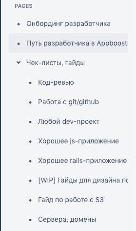
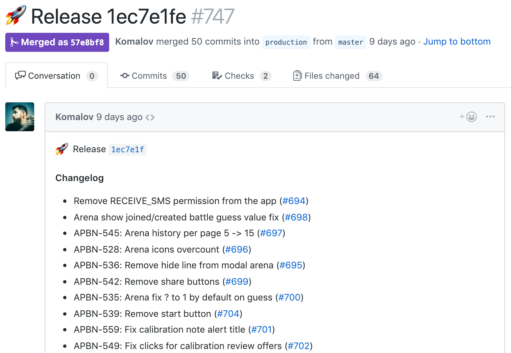
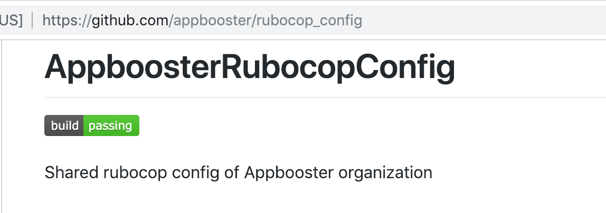
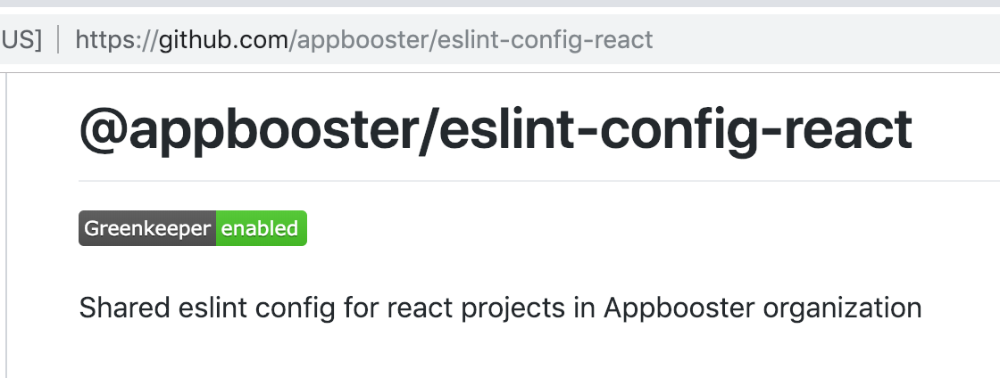
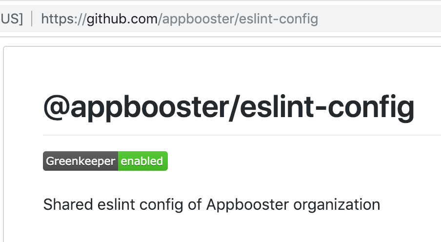
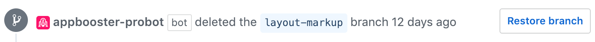
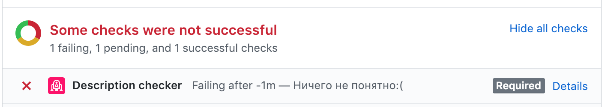
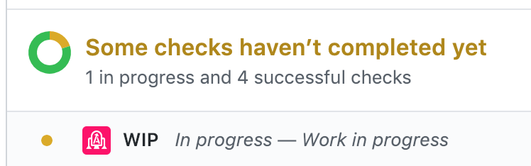
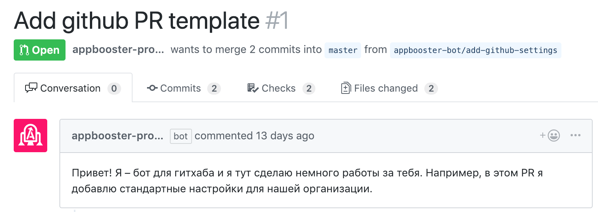

Автоматизация отдела разработки
Yours Truly, Famous Inc.
Зачем нужна автоматизация?
- DRY – don't repeat yourself
- Освободить голову
- Минимизировать вероятность человеческой ошибки
- Стандартизировать способы решения задач
С чего начать?
Попробуйте продуктовый подход
- Находите ключевые процессы
- Выделяйте ключевые метрики
- Анализируйте
- Проводите интервью с «пользователями»
- Выдвигайте и тестируйте гипотезы
- Двигайтесь итерациями
1. Документирование процессов
Документирование процессов: зачем?
- Один инструмент: github, confluence, google docs, etc
- Возможность поиска, ссылки на главы/пункты
- Прозрачный процесс предложения изменений
Документирование процессов: как?
- Система != бюрократия
- Система должна ускорять и упрощать, а не наоборот
- Желательно отвечать на вопрос «почему так?»
- Чем больше ключевых процессов регламентировано — тем лучше
- Нужно оставлять возможность для обхода
Документирование процессов: что?
- Онбординг
- Проекты: ссылки, названия, что и где искать?
- Процесс-код ревью
- Чек-листы, best-practices
- Базы знаний, сборники статей, книг, видео, etc
Документирование процессов: примеры

`2. Использование${шаблонов}`
Шаблоны: для чего?
- Pull-requests
- Release, changelog
- Task
- Инциденты
Шаблоны: Release, changelog

Свои инструменты



4. Continues integration

CI
- Подключать для всех проектов
- Не использовать просто как true/false
- Деплой/сборка всегда через CI
CI
- Тесты + coverage
- Codestyle:
- Types check (flow / typescript)
-
Проверка орфографии (yaspeller)
- Деплой/сборка всегда через CI
- Vulnurability check
- Запрет на «разрастание» пакетов
- Git styleguide check
5. Свои роботы

Свои роботы: API + webhooks
Свои роботы: github API
- Создать PR
- Создать репозиторий
- Добавить check / review
- Добавить коммент
- Добавить лейбл
- Добавить юзера
Свои роботы: probot
- Быстрый старт — 2 минуты
- Большая база готовых ботов
- Возможность композиции ботов
- Простота (nodejs, serverless)
Свои роботы: appbooster-bot
-
Удаляет ветку после мёржа PR

-
Мёржит PR с выбором правильной стратегии по команде
@appbooster-bot merge
- Squash & Merge если это PR в master
- Create Merge Commit если это PR в production
Свои роботы: appbooster-bot
-
Проверяет описание к PR

-
Проверяет, что в названии нет пометки WIP

Свои роботы: appbooster-bot
- Синхронизирует настройки репозитория из файла
.github/settings.yml
- Дефолтная ветка
- Настройки protected branch
- Список лейблов
Свои роботы: appbooster-bot
-
После создания нового репозитория создаёт PR с добавлением 2 файлов
- шаблон
.github/PULL_REQUEST_TEMPLATE.md
- настройки
.github/settings.yml

Свои роботы: планы
- Синхронизация настроек и шаблонов
- Определение типа проекта и добавление инструментов и конфигов
- Автоматизировать добавление/удаление лейблов
- Некоторые проверки в коде (.env, secrets, etc)